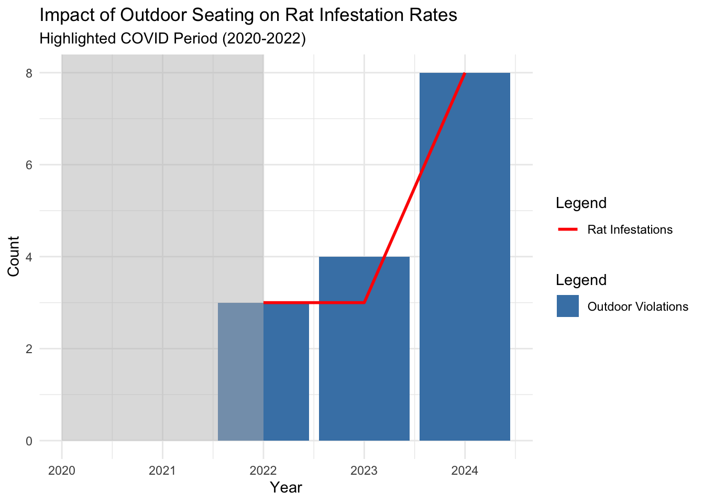

Do restaurants play a significant role in contribution to rat infestation?
New York City restaurant’s persistent struggle with rat infestations has raised concerns about various contributing factors, particularly the role of restaurants. By their nature, restaurants generate significant food waste, and when sanitation practices are inadequate, they create ideal conditions for rats to thrive. This research examines the correlation between restaurant sanitation grades (B and C) and rat activity, as well as the influence of restaurant density on reported rat sightings across neighborhoods.
The study also explores the impact of outdoor dining, which expanded significantly during the COVID-19 pandemic. While outdoor dining supported businesses, it may have inadvertently contributed to rat infestations by increasing food access and improperly managed waste. By analyzing trends in restaurant grades, density, and rat activity over time, we aim to determine whether outdoor dining has exacerbated the rat problem in certain areas.
Through this analysis, we seek to identify patterns and relationships that highlight how restaurant practices contribute to urban rat populations. These insights are critical for developing targeted interventions to mitigate rat infestations and improve public health across NYC neighborhoods.
# Get the current working directorycurrent_path <-getwd()# Define the 'data' directory pathdata_directory <-file.path(current_path, "Rat_Data")# Check if the directory exists, and create it if it doesn'tif (!dir.exists(data_directory)) { success <-dir.create(data_directory, recursive =TRUE)if (success) {message("Directory 'Data' created successfully at: ", data_directory) } else {stop("Failed to create directory 'Data'. Check permissions or file system.") }} else {message("Directory 'Data' already exists at: ", data_directory)}
Data Sources and Rationale
We are automating data analysis using two publicly available data sets from NYC Open Data:
We chose these data sets because they contain detailed information about rat infestations in New York City, collected by the NYC Department of Health and Mental Hygiene (DOHMH), Division of Environmental Health Pest Control. By leveraging this data, we aim to analyze the prevalence and distribution of rat activity across various NYC neighborhoods.
Methodology
We focus on inspection data from 2019, extracting relevant columns and combining the two data sets using zip codes as the common key for integration. The combined data is then cleaned and pre-processed to align with the requirements of our analysis.
Data Limitations
Inspection Bias: The data set does not indicate the absence of rats in areas that were not inspected. This can create an illusion of lower rat activity in neighborhoods with fewer inspections. Similarly, areas with higher rates of active rat signs may reflect more frequent inspections rather than a genuinely higher rat population.
Missing Data: A significant number of empty rows exist within the datasets, which necessitates careful and thorough cleaning to ensure the accuracy and reliability of our analysis. By addressing these limitations and ensuring a robust data-cleaning process, we aim to produce meaningful insights into rat infestation patterns and their correlations with restaurant inspection data.
show the code
# Increase timeout limit to 300 secondsoptions(timeout =300)# Define output filenamesrats_file <-file.path(data_directory, "Rats_Inspection_Full.csv")restaurant_file <-file.path(data_directory, "Restaurant_Inspection_Full.csv")# rats_file <- "Rats_Inspection_Full.csv"# restaurant_file <- "Restaurant_Inspection_Full.csv"# Load and filter the Rats data starting from 2019rats_data <-read_csv(rats_file,show_col_types=FALSE)rats_filtered_data <- rats_data %>%filter(as.Date(`INSPECTION_DATE`, format ="%m/%d/%Y") >=as.Date("2019-01-01"))rats_filtered_file_path <-file.path(data_directory, "Rats_Inspection_2019_onwards.csv")write.csv(rats_filtered_data, rats_filtered_file_path, row.names=FALSE)#message("Filtered Rats data saved to 'Rats_Inspection_2019_onwards.csv'")# Data 2# Load and filter the Restaurant Inspection data starting from 2019restaurant_file <-file.path(data_directory, "Restaurant_Inspection_Full.csv")restaurant_data <-read_csv(restaurant_file,show_col_types=FALSE)restaurant_filtered_data <- restaurant_data %>%filter(as.Date(`INSPECTION DATE`, format ="%m/%d/%Y") >=as.Date("2019-01-01"))restaurant_filtered_file_path <-file.path(data_directory, "Rats_Inspection_2019_onwards.csv")write.csv(restaurant_filtered_data, restaurant_filtered_file_path, row.names=FALSE)#message("Filtered Restaurant Inspection data saved to 'Restaurant_Inspection_2019_onwards.csv'")zipcode_mapping <-read_csv("Rat_data/zipcode_borough.csv", show_col_types=FALSE) # Mapping of ZIP codes to Boroughs# kable(head( rats_filtered_data,5))
INSPECTION_TYPE
JOB_TICKET_OR_WORK_ORDER_ID
JOB_ID
JOB_PROGRESS
BBL
BORO_CODE
BLOCK
LOT
HOUSE_NUMBER
STREET_NAME
ZIP_CODE
X_COORD
Y_COORD
LATITUDE
LONGITUDE
BOROUGH
INSPECTION_DATE
RESULT
APPROVED_DATE
LOCATION
COMMUNITY BOARD
COUNCIL DISTRICT
CENSUS TRACT
BIN
NTA
Initial
13661515
PC8122655
1
NA
1
00529
0009
NA
NA
0
NA
NA
NA
NA
Manhattan
06/07/2023 04:36:13 PM
Passed
06/08/2023 10:38:30 AM
NA
NA
NA
NA
NA
NA
Initial
13264492
PC7744572
1
NA
2
02857
0095
0000
JEROME AVENUE
NA
NA
NA
0
0
Bronx
07/28/2021 12:48:53 PM
Passed
07/29/2021 01:19:32 PM
(0.0, 0.0)
NA
NA
NA
NA
NA
Initial
13252138
PC7732344
1
NA
2
02409
0059
NA
NA
10451
NA
NA
NA
NA
Bronx
07/07/2021 08:49:45 AM
Passed
07/08/2021 10:18:56 AM
NA
NA
NA
NA
NA
NA
Initial
13432908
PC7906420
1
NA
2
02420
0078
0000
EAST 161 STREET
NA
NA
NA
0
0
Bronx
07/19/2022 01:50:56 PM
Passed
07/20/2022 11:03:35 AM
(0.0, 0.0)
NA
NA
NA
NA
NA
Initial
13392717
PC7869938
1
NA
2
02509
0044
0000
WOODYCREST AVENUE
NA
NA
NA
0
0
Bronx
05/20/2022 01:08:51 PM
Passed
05/23/2022 10:36:46 AM
(0.0, 0.0)
NA
NA
NA
NA
NA
show the code
kable(head( restaurant_filtered_data,5))
CAMIS
DBA
BORO
BUILDING
STREET
ZIPCODE
PHONE
CUISINE DESCRIPTION
INSPECTION DATE
ACTION
VIOLATION CODE
VIOLATION DESCRIPTION
CRITICAL FLAG
SCORE
GRADE
GRADE DATE
RECORD DATE
INSPECTION TYPE
Latitude
Longitude
Community Board
Council District
Census Tract
BIN
BBL
NTA
Location Point1
50105051
The Legend Lounge
Manhattan
2509
ADAM CLAYTON POWELL JR BOULEVARD
NA
7186712232
Other
12/17/2021
Violations were cited in the following area(s).
15E2
Flavored tobacco products sold or offered for sale
Not Applicable
NA
NA
NA
12/07/2024
Smoke-Free Air Act / Initial Inspection
0.00000
0.00000
NA
NA
NA
NA
1
NA
NA
40376515
AMERICAN MUSEUM OF NATURAL HISTORY FOOD COURT
Manhattan
NA
W 79 STREET
10024
2127695370
American
06/21/2023
No violations were recorded at the time of this inspection.
NA
NA
Not Applicable
0
A
06/21/2023
12/07/2024
Cycle Inspection / Initial Inspection
NA
NA
NA
NA
NA
NA
NA
NA
NA
41574266
MOMOFUKU MILK BAR
Manhattan
251
EAST 13 STREET
10003
3475779504
Coffee/Tea
10/12/2024
No violations were recorded at the time of this inspection.
NA
NA
Not Applicable
0
NA
NA
12/07/2024
Inter-Agency Task Force / Initial Inspection
40.73212
-73.98654
103
02
004000
1006911
1004690037
MN22
NA
50133642
MATCHA Cafe MAIKO
Queens
13333
39TH AVE
11354
3473998961
Coffee/Tea
10/05/2024
No violations were recorded at the time of this inspection.
NA
NA
Not Applicable
0
NA
NA
12/07/2024
Inter-Agency Task Force / Initial Inspection
40.75911
-73.83416
407
20
087100
4000000
4049727504
QN22
NA
41081510
CHOP’T
Manhattan
60
EAST 56 STREET
10022
2127502467
Salads
03/03/2022
Violations were cited in the following area(s).
02B
Hot food item not held at or above 140º F.
Critical
10
A
03/03/2022
12/07/2024
Cycle Inspection / Re-inspection
40.76135
-73.97226
105
04
010200
1035773
1012910045
MN17
NA
Correlation between poor restaurant sanitation and increased rat activity
Hypothesis:
Boroughs with a higher number of Grade B and C restaurants are more likely to experience elevated rat sighting, particularly in localized ZIP codes. Poor sanitation practices associated with lower restaurant grades likely contribute to rat infestations.
To address the limitations of missing data and analyze the relationship between poor restaurant sanitation and rat activity, we focused on restaurants with Grades B and C and rat density across ZIP Codes in the five boroughs of New York City: Bronx, Brooklyn, Manhattan, Queens, and Staten Island.
Data Cleaning and Standardization
ZIP Code Validation: The data was cleaned and standardized to ensure all ZIP Codes were valid and accurately mapped to their respective boroughs using a ZIP
Code-to-borough mapping file.
Restaurant Sanitation Data:
Restaurants receiving sanitation Grades B and C, which indicate lower sanitation standards, were filtered and counted for each ZIP Code.
Rat Density Data: Rat activity data was filtered to exclude inspections resulting in “Passed” or “Failed for Other R” outcomes. This provided a more
reliable measure of rat activity by focusing on confirmed rodent sightings or infestations.
Merging and Analysis
The cleaned restaurant sanitation data and rat density data were merged using ZIP Codes as the key. This integration allowed us to directly compare the number of restaurants with lower sanitation grades to rat activity within each ZIP Code.
This process ensured a comprehensive analysis of how poor sanitation practices in restaurants might correlate with increased rat infestations across New York City neighborhoods.
show the code
# Step 1: Clean ZIP Codes and Map Boroughs -----------------------------------zipcode_mapping <- zipcode_mapping %>%mutate(ZIPCODE =str_trim(as.character(Zipcode)),BOROUGH =str_trim(as.character(Borough)))# Clean and map restaurant datarestaurants_clean <- restaurant_filtered_data %>%mutate(ZIPCODE =str_trim(as.character(ZIPCODE)),ZIPCODE =ifelse(str_length(ZIPCODE) ==5, ZIPCODE, NA)) %>%# Ensure valid 5-digit ZIP codesfilter(!is.na(ZIPCODE)) %>%mutate(BORO =ifelse(is.na(BORO), zipcode_mapping$BOROUGH[match(ZIPCODE, zipcode_mapping$ZIPCODE)], BORO))# Filter for restaurants with Grades B and Crestaurants_bc <- restaurants_clean %>%filter(GRADE %in%c("B", "C")) %>%group_by(BORO, ZIPCODE) %>%summarise(Restaurants_Grade_BC =n(), .groups ="drop")# Clean and map rat datarats_clean <- rats_filtered_data %>%mutate(ZIP_CODE =str_trim(as.character(ZIP_CODE)),ZIP_CODE =ifelse(str_length(ZIP_CODE) ==5, ZIP_CODE, NA)) %>%filter(!is.na(ZIP_CODE), !RESULT %in%c("Passed", "Failed for Other R")) %>%mutate(BOROUGH =ifelse(is.na(BOROUGH), zipcode_mapping$BOROUGH[match(ZIP_CODE, zipcode_mapping$ZIPCODE)], BOROUGH)) %>%group_by(BOROUGH, ZIP_CODE) %>%summarise(Rat_Density =n(), .groups ="drop")# Step 2: Combine Data -------------------------------------------------------combined_data <-full_join(restaurants_bc, rats_clean, by =c("ZIPCODE"="ZIP_CODE", "BORO"="BOROUGH")) %>%replace_na(list(Restaurants_Grade_BC =0, Rat_Density =0))kable(head(combined_data, 5))
BORO
ZIPCODE
Restaurants_Grade_BC
Rat_Density
Bronx
10451
103
4515
Bronx
10452
105
9205
Bronx
10453
93
7843
Bronx
10454
91
1907
Bronx
10455
132
3159
show the code
# Step 3: Generate Plots for Each Borough ------------------------------------plot_list <-list()boroughs <-unique(combined_data$BORO)# Loop through each borough and create plotsfor (b in boroughs) { data_borough <- combined_data %>%filter(BORO == b)# Plot 1: Number of Restaurants (Grade B and C) by ZIP Code plot_bc <-ggplot(data_borough, aes(x = ZIPCODE, y = Restaurants_Grade_BC, group =1)) +geom_line(color ="blue", size =1) +geom_point(color ="blue", size =2) +labs(title =paste("Number of Restaurants with Grade B and C -", b),x ="ZIP Code", y ="Number of Restaurants") +theme_minimal() +theme(axis.text.x =element_text(angle =90, hjust =1, size =10),plot.title =element_text(size =12, face ="bold")) +scale_y_continuous(labels = comma)# Plot 2: Rat Density by ZIP Code plot_rats <-ggplot(data_borough, aes(x = ZIPCODE, y = Rat_Density, group =1)) +geom_line(color ="red", size =1) +geom_point(color ="red", size =2) +labs(title =paste("Rat Sighting per ZIP Code -", b),x ="ZIP Code", y ="Rat Sighting") +theme_minimal() +theme(axis.text.x =element_text(angle =90, hjust =1, size =10),plot.title =element_text(size =12, face ="bold")) +scale_y_continuous(labels = comma)# Arrange the two plots vertically (one on top of the other) combined_plot <-grid.arrange(plot_bc, plot_rats, ncol =1) # Use ncol = 1 for vertical layout plot_list[[b]] <- combined_plot}
show the code
options(tigris_progress =FALSE)library(tigris) # Fetch borough boundarieslibrary(sf) # Spatial datalibrary(dplyr) # Data manipulationlibrary(ggplot2) # Visualizationlibrary(ggrepel) # Improved text labelslibrary(zipcodeR) # st want to Fetch latitude/longitude for ZIP codeslibrary(gganimate) # Animation#options(gganimate.dev = gifski_renderer())library(transformr) # Smooth animationslibrary(gifski)library(av)# Step 1: Fetch NYC Borough Boundaries -----------------------------------------nyc_boroughs <-counties(state ="NY", cb =TRUE, resolution ="5m", year =2022) %>%filter(NAME %in%c("Bronx", "Kings", "New York", "Queens", "Richmond")) # NYC counties# Calculate centroid of each borough for annotationborough_centroids <- nyc_boroughs %>%st_centroid() %>%st_coordinates() %>%as.data.frame() %>%bind_cols(Borough = nyc_boroughs$NAME)# Step 2: Filter High-Density Data ---------------------------------------------# Filter for areas with high restaurant density and rat populationhigh_density_data <- combined_data %>%filter(Restaurants_Grade_BC >100& Rat_Density >500)# Step 3: Add Coordinates to ZIP Codes -----------------------------------------# Fetch latitude and longitude for ZIP codes using zipcodeRhigh_density_data <- high_density_data %>%mutate(coords = purrr::map(ZIPCODE, reverse_zipcode)) %>% tidyr::unnest_wider(coords) %>%filter(!is.na(lat) &!is.na(lng)) %>%# Ensure valid coordinatesrename(Longitude = lng, Latitude = lat) %>%arrange(BORO, ZIPCODE) %>%# Arrange for animationmutate(step =row_number()) # Add animation sequence# Update borough namesborough_centroids <- borough_centroids %>%mutate(Borough =case_when( Borough =="New York"~"Manhattan", Borough =="Kings"~"Brooklyn", Borough =="Richmond"~"Staten Island",TRUE~ Borough ))# Step 4: Create the Animated Map with Borough Annotations ---------------------animated_map <-ggplot() +# Plot borough boundariesgeom_sf(data = nyc_boroughs, fill ="lightgray", color ="white") +# Add borough names at centroid positionsgeom_text(data = borough_centroids, aes(x = X, y = Y, label = Borough), color ="black", size =5, fontface ="bold") +# Add animated pins for high-density areasgeom_point(data = high_density_data, aes(x = Longitude, y = Latitude, group = step), color ="red", size =3) +# Add ZIP Code labelsgeom_text_repel(data = high_density_data, aes(x = Longitude, y = Latitude, label = ZIPCODE), size =3) +# Titles and captionslabs(title ="High-Density Restaurant and Rat Population Areas in NYC",subtitle ="Sequential display of ZIP Codes with high density",caption ="Data Source: NYC Open Data & tigris") +# Animationtransition_reveal(along = step) +# Sequential animationenter_grow() +# Pins grow as they appearexit_fade() +# Optional: Pins fade outtheme_minimal()# Step 5: Render and Save the Animation ----------------------------------------# animate(animated_map, nframes = 50, fps = 2, width = 600, height = 400, renderer = gifski_renderer())# anim_save("nyc_high_density_animation.gif")# # knitr::include_graphics("nyc_high_density_animation.gif")
#### Key Observations Across Boroughs:
Bronx:
The ZIP codes 10457 and 10458 show higher rat density (above 12,000) while also exhibiting a significant number of restaurants with Grade B and C.
There seems to be a noticeable link between the increase in rat activity and areas with more restaurants receiving lower grades.
Brooklyn:
ZIP codes 11215 and 11222 show the highest rat densities (over 20,000), corresponding to relatively high numbers of restaurants with Grade B and C.
Rat infestations in Brooklyn appear to cluster in specific ZIP codes, suggesting that localized waste management issues may be contributing to the problem.
Manhattan:
ZIP codes 10013 and 10036 have both the highest number of restaurants with Grade B and C (over 600) and noticeable rat activity.
Despite a significant concentration of lower-graded restaurants, rat densities remain moderate compared to other boroughs, suggesting more effective urban management in some areas.
Queens:
ZIP codes 11385 and 11373 show the highest rat densities and a considerable number of restaurants with Grade B and C.
Rat density appears to peak sharply in specific ZIP codes, correlating with localized concentrations of lower-graded restaurants.
Staten Island:
Staten Island has the lowest rat across all ZIP codes, with a small number of lower-graded restaurants.
ZIP code 10301 has the highest rat density (600) but relatively fewer restaurants compared to other boroughs.
Learnings:
Localized Rat Clusters:
Rat density is not uniformly distributed; specific ZIP codes within boroughs, such as 10457 (Bronx) and 11215 (Brooklyn), experience disproportionately high rat activity.
Borough-Specific Trends:
Manhattan: Despite high restaurant density, rat activity remains moderate.
Brooklyn and Bronx: Exhibit stronger correlations between rat density and restaurants with lower grades.
ZIP codes with high numbers of Grade B and C restaurants should be prioritized for sanitation inspections and waste management improvements to reduce rat activity.
Conclusion:
The analysis highlights a positive relationship between the number of restaurants with lower grades (B and C) and rat activity density, especially in high-density boroughs like the Bronx, Brooklyn, and Queens. Effective sanitation practices and targeted interventions in identified ZIP codes are critical to addressing this issue.
Outdoor dining and its impact on Rat infestation in NYC
Outdoor dining in New York City became a significant part of the restaurant scene, particularly during the COVID-19 pandemic, when it was rapidly expanded to allow restaurants to operate on sidewalks, streets, and other open spaces. While this initiative provided safer dining options and supported businesses, it also brought challenges related to sanitation and waste management. Food scraps, improperly stored trash, and debris from outdoor setups created an environment that attracted pests, particularly rats, leading to increased health code violations and rat sightings.
To analyze if outdoor dining has caused an increase in rat infestations, we will compare rat sightings near outdoor dining violations over time. By identifying outdoor seating violations and checking for rat inspections within a 100-meter radius, we can observe patterns and trends. Specifically, we will focus on the pandemic years (2020-2022) when outdoor dining expanded significantly, to determine if rat infestation rates increased in these areas compared to previous years.
Hypothesis:
The increase in outdoor seating violations after COVID (2020-2022) may have contributed to higher rat infestation rates. This could be due to improper waste management and sanitation practices around outdoor dining areas.
show the code
library(dplyr)library(ggplot2)library(geosphere)library(lubridate)# Filter rat inspections with valid lat/lon and failed resultsrats_filtered_loc <- rats_filtered_data %>%filter(!is.na(LATITUDE) &!is.na(LONGITUDE) & RESULT !="Passed") %>%mutate(YEAR =year(mdy_hms(INSPECTION_DATE)))# Extract outdoor seating violations from restaurantsoutdoor_seating <- restaurant_filtered_data %>%filter(grepl("outdoor|seating|sidewalk", `VIOLATION DESCRIPTION`, ignore.case =TRUE)) %>%filter(!is.na(Latitude) &!is.na(Longitude)) %>%mutate(YEAR =year(mdy(`INSPECTION DATE`)))# Select coordinates for rats and outdoor seatingoutdoor_coords <- outdoor_seating %>%select(Latitude, Longitude) %>%filter(!is.na(Latitude) &!is.na(Longitude)) %>%na.omit()rat_coords <- rats_filtered_loc %>%select(LATITUDE, LONGITUDE) %>%filter(!is.na(LATITUDE) &!is.na(LONGITUDE)) %>%na.omit()# Function to check for nearby rats (100 meters)find_rats_nearby <-function(outdoor_coords, rat_coords, distance_threshold =100) {# Ensure both inputs are matrices with exactly two columns rat_coords <-as.matrix(rat_coords[, c(1, 2)]) outdoor_coords <-as.matrix(outdoor_coords[, c(1, 2)])# Validate column names and typesif (ncol(rat_coords) !=2|ncol(outdoor_coords) !=2) {stop("Error: Inputs must have exactly two columns (latitude, longitude).") } result <-sapply(1:nrow(outdoor_coords), function(i) { point <- outdoor_coords[i, ] # Current restaurant coordinates distances <-distHaversine(matrix(point, nrow =1), rat_coords) # Distance to all rat pointsany(distances <= distance_threshold) # TRUE if within threshold })return(result)}# Apply the corrected functionoutdoor_seating$RAT_INFESTATION_NEARBY <-find_rats_nearby(outdoor_coords, rat_coords)# Select specific columnsselected_columns <- outdoor_seating %>%select("DBA","BORO","ZIPCODE", "YEAR",`VIOLATION CODE`, 'RAT_INFESTATION_NEARBY')# Print the selected columnskable(head(selected_columns, 6))
DBA
BORO
ZIPCODE
YEAR
VIOLATION CODE
RAT_INFESTATION_NEARBY
BLUESTONE LANE
Manhattan
10128
2024
28-07
TRUE
STEVE’S ORIGINAL JERK CHICKEN
Brooklyn
11203
2022
28-07
TRUE
G & S RESTAURANT
Bronx
10466
2024
28-07
TRUE
TWO BROTHERS FISH & CHIPS
Brooklyn
11206
2023
28-07
TRUE
ZOUJI BBQ
Queens
11355
2024
28-07
TRUE
NIEVES TIA MIMI ICES
Brooklyn
11220
2024
28-07
TRUE
show the code
# Group by year and count rat infestations near outdoor seating violationsrat_summary <- outdoor_seating %>%filter(RAT_INFESTATION_NEARBY ==TRUE) %>%group_by(YEAR) %>%summarise(Rat_Infestations =n())# Summarize total outdoor seating violations by yearoutdoor_summary <- outdoor_seating %>%group_by(YEAR) %>%summarise(Outdoor_Violations =n())# Combine the two summariescombined_summary <-full_join(outdoor_summary, rat_summary, by ="YEAR") %>%replace_na(list(Outdoor_Violations =0, Rat_Infestations =0))# Visualization --------------------------------------------------------------ggplot(combined_summary, aes(x = YEAR)) +geom_bar(aes(y = Outdoor_Violations, fill ="Outdoor Violations"), stat ="identity", position ="dodge") +geom_line(aes(y = Rat_Infestations, color ="Rat Infestations"), size =1) +scale_fill_manual(values =c("Outdoor Violations"="steelblue")) +scale_color_manual(values =c("Rat Infestations"="red")) +geom_rect(aes(xmin =2020, xmax =2022, ymin =0, ymax =Inf), fill ="gray", alpha =0.2) +labs(title ="Impact of Outdoor Seating on Rat Infestation Rates",subtitle ="Highlighted COVID Period (2020-2022)",x ="Year", y ="Count",fill ="Legend", color ="Legend") +theme_minimal()
Key Observations:
Outdoor Violations:
There was a clear increase in outdoor seating violations after 2022.
The violations appear to be highest in 2024, following a gradual rise from 2022 to 2024.
Rat Infestation Rates:
Rat infestations near outdoor seating violations also showed a consistent upward trend, increasing sharply in 2023 and 2024.
The correlation suggests that as outdoor seating violations increase, rat infestations also rise.
COVID Period (2020-2022):
The shaded gray area highlights the COVID period (2020-2022), where the counts of outdoor seating violations and rat infestations were relatively lower compared to post-COVID years.
Post-2022, there is a notable rise in both outdoor violations and rat infestations.
A report by Elazar Sontag in Eater (December 14, 2021) provides critical insights into the rise of rat infestations in New York City post-COVID-19, aligning with my findings on the impact of outdoor dining. The article shares a specific incident at a Brooklyn wine bar where an unusual smell was traced to something decaying beneath the outdoor dining structure, inaccessible without tearing up the entire parklet. This story highlights how outdoor dining setups, while beneficial for restaurants, inadvertently created new habitats for rats by providing shelter and easier access to food waste.
I think we can all agree that during the peak of COVID-19 in 2020, rat populations initially declined due to the closure of restaurants, which limited food availability. Sontag’s article describes reports of starving rats resorting to cannibalism as food sources dwindled. However, the reopening of restaurants, particularly with outdoor dining spaces and street-side cooking, reversed this trend by creating an abundance of food once again. As a result, rats rapidly reappeared, with infestations increasing across neighborhoods.
This finding aligns with my analysis, which shows a notable correlation between rat activity and outdoor dining violations post-COVID. The lack of adequate waste management in outdoor setups further exacerbated the problem, leading to lawsuits demanding stricter sanitation measures and reconsideration of outdoor dining practices. The issue is not unique to NYC; cities like New Orleans, Chicago, and Los Angeles have reported unprecedented increases in rat sightings following the rise of outdoor dining. These observations emphasize the need for improved waste management strategies to address the unintended consequences of outdoor dining on urban rat infestations.
Learning:
Post-COVID: The rise/ existing in unauthorized outdoor dining, lack of proper waste management, street cooking, and similar activities have likely exacerbated rat infestations, emphasizing the importance of effective waste management.
Preventative Measures: To mitigate rat infestations, stricter enforcement of sanitation protocols for outdoor seating areas is necessary, especially in periods of increased outdoor dining activity.
Conclusion:
We can see a positive relationship between the increase in outdoor seating violations and rat infestation, particularly in 2024.
Restaurants: A Vital Part of NYC and Their Role in Rat Infestation
Restaurants are a key part of NYC’s culture and economy, providing jobs, tourism, and vibrant dining spaces. However, poor sanitation and the rise of outdoor dining have contributed to rat infestations by increasing food waste and trash.
Now, we will analyze the correlation between restaurant density and rat population across NYC boroughs. Higher restaurant density, especially those with poor grades (B and C), may attract and sustain larger rat populations, highlighting the connection between restaurant presence and rat infestations in NYC.
Hypothesis:
Higher restaurant density contributes to increased rat activity due to improper waste management, food availability, and urban environmental factors.
show the code
# Step 1: Prepare ZIP Code Mapping -------------------------------------------zipcode_mapping <- zipcode_mapping %>%mutate(ZIPCODE =str_trim(as.character(Zipcode)),BOROUGH =str_trim(as.character(Borough)))# Step 2: Fill NA or Invalid BORO in Restaurant Data -------------------------restaurant_filtered_zb <- restaurant_filtered_data %>%mutate(ZIPCODE =str_trim(as.character(ZIPCODE)), # Trim and convert ZIPCODEBORO =ifelse(is.na(BORO) | BORO =="0", coalesce(zipcode_mapping$BOROUGH[match(ZIPCODE, zipcode_mapping$ZIPCODE)], BORO), BORO))# Step 3: Fill NA or Invalid BOROUGH in Rat Data -----------------------------rats_filtered_zb <- rats_filtered_data %>%mutate(ZIP_CODE =str_trim(as.character(ZIP_CODE)), # Trim and convert ZIP_CODEBOROUGH =coalesce(zipcode_mapping$BOROUGH[match(ZIP_CODE, zipcode_mapping$ZIPCODE)], BOROUGH))# Step 2: Filter Rat Data for Rat Activity -----------------------------------rat_activity <- rats_filtered_zb %>%filter(!RESULT %in%c("Passed", "Failed for Other R")) %>%filter(!is.na(LATITUDE) &!is.na(LONGITUDE)) %>%group_by(BOROUGH) %>%summarise(Rat_Activity_Count =n())# Step 3: Aggregate Restaurant Data by Borough ------------------------------restaurant_density <- restaurant_filtered_zb %>%filter(!is.na(Latitude) &!is.na(Longitude)) %>%group_by(BORO) %>%summarise(Restaurant_Count =n())# Step 4: Merge Data ---------------------------------------------------------density_data <- restaurant_density %>%mutate(BORO =str_to_lower(str_trim(BORO))) %>%inner_join( rat_activity %>%mutate(BOROUGH =str_to_lower(str_trim(BOROUGH))),by =c("BORO"="BOROUGH") )# Step 5: Visualization ------------------------------------------------------ggplot(density_data, aes(x = Restaurant_Count, y = Rat_Activity_Count, label = BORO)) +geom_point(size =4, color ="blue") +# Scatter pointsgeom_smooth(method ="lm", color ="red", se =TRUE) +# Trendline with confidence intervalgeom_text_repel(aes(label =paste0(BORO, " (", Restaurant_Count, ", ", Rat_Activity_Count, ")")),size =4, color ="black", box.padding =0.5) +# Add BORO and coordinatesscale_y_continuous(labels = comma) +# Format y-axis as whole numbersscale_x_continuous(labels = comma) +# Format x-axis as whole numberslabs(title ="Density of Restaurants vs Rat Activity",subtitle ="Analyzing Relationship Between Restaurants and Rat Infestation Rates",x ="Number of Restaurants (Density)",y ="Number of Rat Activity Inspections") +theme_minimal()

Key Observations:
Positive Correlation:
The graph shows a slight positive correlation between the number of restaurants (restaurant density) and the number of rat activity inspections.
Boroughs with higher restaurant density, such as Manhattan and Brooklyn, also exhibit higher rat activity inspections.
Manhattan and Brooklyn:
These boroughs have the highest restaurant densities (e.g., Manhattan: ~94,661 restaurants) and significant rat activity counts (e.g., 136,963 inspections).
This suggests that areas with concentrated restaurant activity may experience increased rat infestations due to factors such as waste generation.
Low-Density Areas:
Staten Island has the lowest restaurant density (~9,218 restaurants) and rat activity inspections (~2,049). This aligns with the general trend that lower restaurant density areas tend to have lower rat activity.
Outliers:
The Bronx appears to have a higher number of rat activity inspections relative to its restaurant density (~23,274 restaurants, ~96,498 inspections). This could indicate other contributing factors, such as waste management issues or urban infrastructure challenges.
Learning:
Targeted Waste Management Policies: Boroughs with higher restaurant density, like Manhattan and Brooklyn, require stricter waste management practices to mitigate rat infestations.
Further Investigation: The Bronx’s higher rat activity relative to restaurant density warrants further analysis into non-restaurant-related factors contributing to infestations.
Summary
Our analysis demonstrates a clear relationship between rat infestations in NYC and factors such as poor sanitation, restaurant density, and the expansion of outdoor dining. We found that areas with higher concentrations of restaurants, particularly those with grades B and C, tend to experience increased rat activity. Poor waste management, exacerbated by outdoor dining setups, creates conditions that attract and sustain rat populations. Boroughs like Manhattan and Brooklyn, with the highest restaurant density, showed the strongest correlation with rat infestations.
Limitations of Our Assumptions
Data Quality: Our analysis relies on inspection data, which may not capture all instances of rat activity or sanitation violations. Underreporting or delayed reporting could affect the results.
Spatial Accuracy: We assume a 100-meter radius for rat sightings around outdoor dining violations, which may not accurately reflect rats’ mobility or the true impact area.
Causality vs. Correlation: While we found correlations between restaurant density, sanitation, and rat activity, this does not prove direct causality. Other
underlying factors might contribute to the observed patterns.
COVID-19 Impact: The unique circumstances of the COVID-19 pandemic, such as temporary outdoor dining policies and changes in waste management services, could distort long-term trends.
Proposal for Future Work
Our analysis has revealed significant correlations between poor restaurant grades (B and C), rat activity, restaurant density, and the impact of outdoor dining on rat infestations across NYC neighborhoods. While these findings provide important insights, further work is needed to deepen our understanding and address limitations. Below are key proposals for future work:
Borough-Level and Neighborhood-Specific Analysis
Conduct a detailed analysis at the borough and neighborhood levels to identify localized trends and specific hotspots. This will help target interventions in areas with the highest rat activity and poor restaurant sanitation.
Comparison with Other Cities
Conduct a comparative analysis with data from other major cities to understand how NYC’s rat infestation problem aligns with or differs from similar urban areas. This can offer best practices for managing sanitation and rat control.
Public Behavior and Policy Impact
Assess the role of public behavior (e.g., littering, improper waste disposal) and evaluate the effectiveness of existing sanitation policies. Surveys or community-level data can provide insights into how public education campaigns and enforcement influence rat activity.
Temporal Trends and Longitudinal Analysis
Expand the analysis to include multi-year data to examine how rat activity changes over time, particularly before, during, and after the COVID-19 pandemic. Investigating seasonal trends will also help determine when rat infestations peak and how outdoor dining contributes to this cycle.


 #### Key Observations Across Boroughs:
#### Key Observations Across Boroughs: